Landscape Pattern Analysis: What data type works better?
February 12, 2023
The conservation of forest and natural areas from the threat of ill-conceived urbanization and development involves understanding their form and physical structure. The fragmentation and degradation of the continuity of natural elements can cause loss of biodiversity and habitats. Therefore, it is important to identify the nodes and connections of regional landscape networks to formulate strategies to protect them from further damage as well as establish new improved connections.
One of the tools to assess landscape patterns and their components is MSPA (Morphological Spatial Pattern Analysis) developed by the European Commission. In general, this tool was designed to detect and describe the morphological features of any binary digital image. It is a simple tool that has been adopted in various scientific research associated with image processing such as wildlife habitat, land cover management and marine research.
MSPA uses a geometrical concept to mathematically analyse a binary image wherein the foreground pixels are the pixels of interest, and the rest of the pixels in which the foreground is embedded are called background.
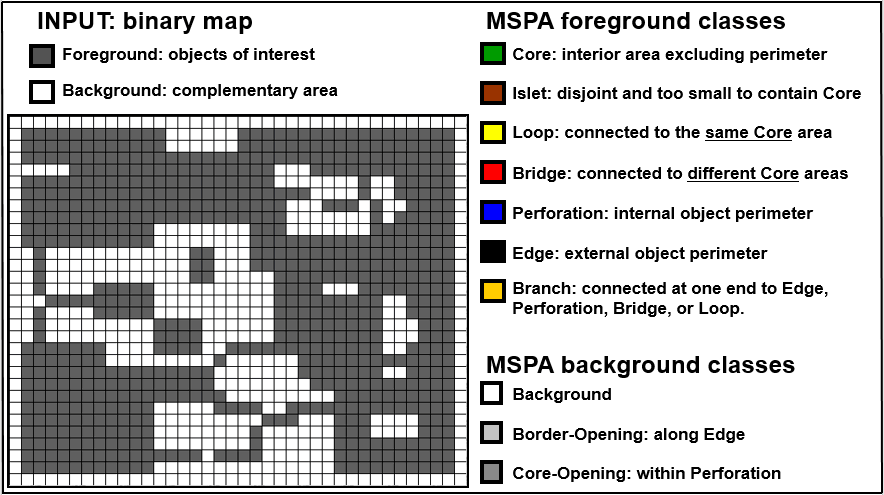
The tool categorises its input into seven broad mutually exclusive components using the notion of path connectivity as described in the table:
| Components | Description | Ecological Meaning |
|---|---|---|
| Core | A collection of foreground pixels which are interconnected and greater than the user-specified edge width from background. | Large natural patches with high connectivity with other natural components. |
| Islet | A collection of foreground pixels which is smaller than the core zone and do not connect to any other foreground cells. | Individual smaller natural patches that are isolated and do not connect with other natural elements. |
| Perforation | The transition pixels between foreground and background inside core areas that form the inner edge. | Unnatural patch inside the core area. |
| Edge | Transition pixels between the foreground and background that form the outer edge. | The transition zone between vegetation and non-vegetation areas. |
| Loop | Linearly oriented foreground pixels extended from a core and connects back to the same core. | Corridor that extends out and reconnects with its natural core. |
| Bridge | A set of linear foreground pixels between two cores that connect two or more core areas. | The natural element that connects two cores, equivalent to the connecting corridors of the green space network. |
| Branch | Linearly oriented foreground pixels extended from core that do not connect to any other core area. | Linear form extending out from a core with low connectivity. |
I decided to use this tool to map the landscape network pattern of the city of Prague using the layer of its blue and green infrastructure (BGI) that would include its forests, farms, urban green areas and waterbodies. My first task was to decide the data source to identify and map BGI and that is what this article is about.
Find different data sources of BGI suitable for MSPA and compare their results.
To conduct land cover assessments, studies often rely on land use land cover (LULC) vector maps that are increasingly becoming available at granular level. For example, CORINE Land Cover provides LULC data into 44 categories for Europe including forests, agricultural fields, open green areas, urban parks, etc. Local governments in Europe also generate and provide their own details land cover vector maps, such as in case of Prague, the open data on existing land use categorized LULC into 126 types. While LULC vectors represent homogeneous landscape patterns, they do not indicate the quality of vegetation and mass of canopy that in fact define the input for MSPA. Moreover, outdated LULC in dynamic urbanization scenario can also produce inaccurate outputs. For example the 'meadows, pastures, grass fields' category in Prague's vector map has different density of vegetation. This inconsistency might skew the results and identify barren land with no canopy as possible sites with ecosystems under MSPA.
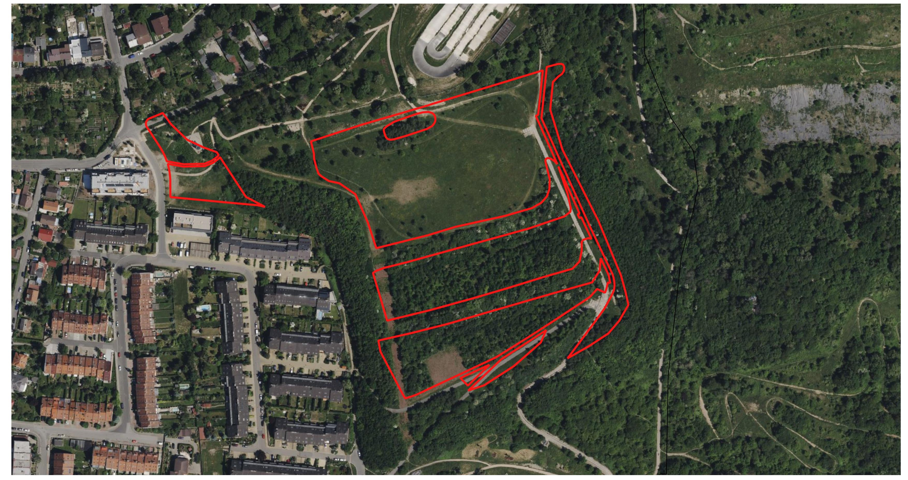
Methodology
Other than vector maps, raster satellite imageries are often seen as primary sources to identify real canopy and in fact process them to delineate the natural and semi-natural areas of LULC vector. The commonly used index to measure the presence and quality of live green vegetation from a satellite imagery is NDVI (Normalized difference vegetation index) that takes into account red (visible) and near-infrared spectral bands and calculates the pixel values that represents the magnitude of vegetation greenness. Ranging between -1 to 1, higher values (0.60 - 1.00) are generated by pixels with healthy dense vegetation, 0.35 - 0.60 as moderately healthy canopy whereas values in negative are found to be water, clouds or snow.
To conduct the MSPA of the city of Prague, I used three types of data sources as detailed below:
| Source No. | Map type | Source | Scale / resolution | Time |
|---|---|---|---|---|
| 1. | Vector LULC map | Prague official geoportal | 1:5000 m | Updated on November 2022 |
| 2. | Raster imageries 1 | Sentinel 2 - Band 4 and Band 8 | 10 m | Downloaded for June and July 2022 |
| 3. | Raster imageries 2 | Landsat 8 - Band 4 and Band 5 | 30 m | Downloaded for May, June and July 2022 |
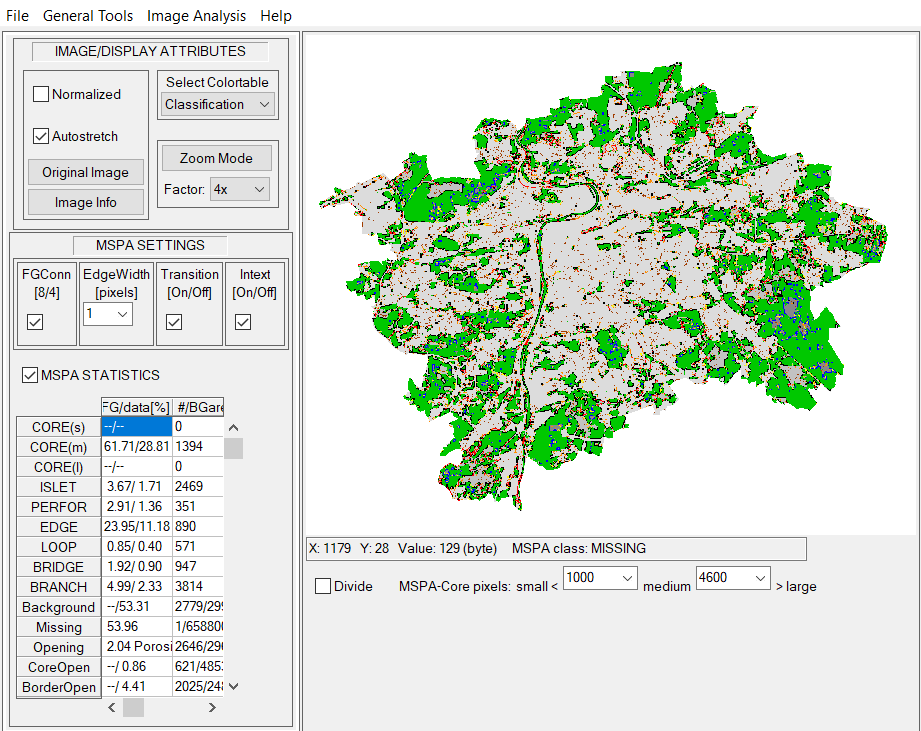
For the vector LULC map, I selected features typically indicating blue and green infrastructure labelled as forests, agricultural and horticulture use, plantations, rural and urban green spaces, public and private land with vegetation and water bodies, and dissolved them into one single combined feature. Next, the vector layer was rasterized with the resolution of 5 m and fed as input in the MSPA tool. As the lowest resolution that would define minimum edge value is Landsat 8-9 data (30 m), the edge widths were set accordingly (6 for source 1, 3 for source 2 and 1 for source 3). Edge widths are often decided on the objective of the study and the resolution of the data. They vary from 16m to 300m from what I have read.
In case of NDVI, as I included farmlands and other plantation in the analysis, it was important to account for the crop patterns in Prague region. Since, between April to November months of the year, several kinds of crops are planted and harvested, it can be assumed that the aggregate of greenness from these months can provide a consolidated picture of vegetation health and greenness in a year.
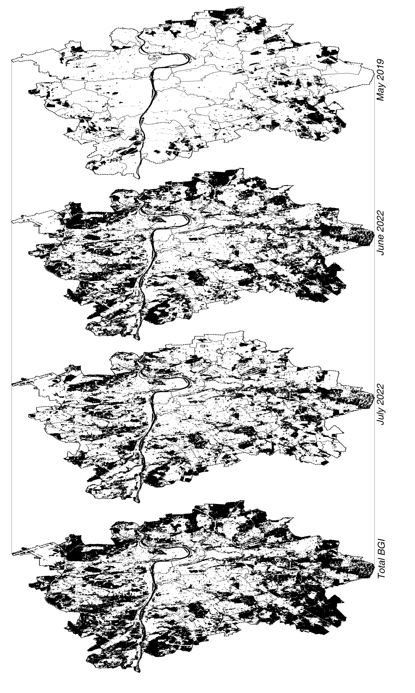
NDVI merging process
As the latest cloud-free satellite imageries for both Sentinel 2 and Landsat 8-9 images were available only for the months of May, June and July, they were used as input for NDVI calculation. Here, red (visible) and near-infrared spectral bands from Sentinel 2 and Landsat 8-9 were used to develop the NDVI rasters and pixels with values greater than 0.4 were chosen and overlaid for the selected months. The figure demonstrates that for each cropping month (May, June and July), the rasters derived from Landsat 8-9 were transformed into binary rasters with pixels valued greater than 0.4.
For blue infrastructure, shapefiles from city's open portal were used and transformed into the same valued pixels as green infrastructure and merged into the final raster. These final binary rasters for both satellite sources were used as inputs for the MSPA and the results were visually juxtaposed and statistically compared.
Outcome
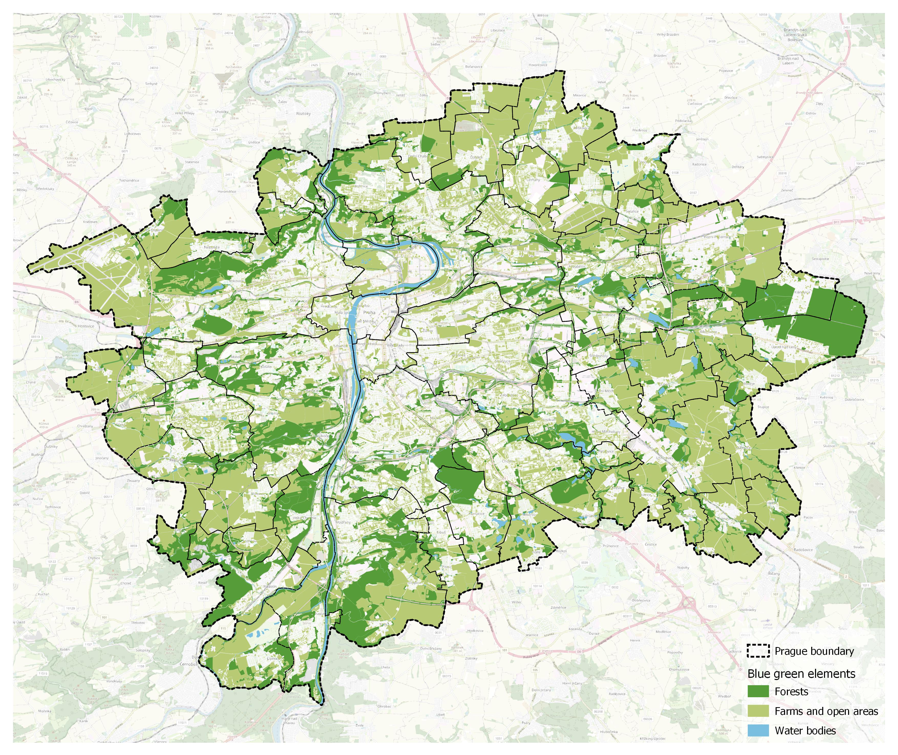
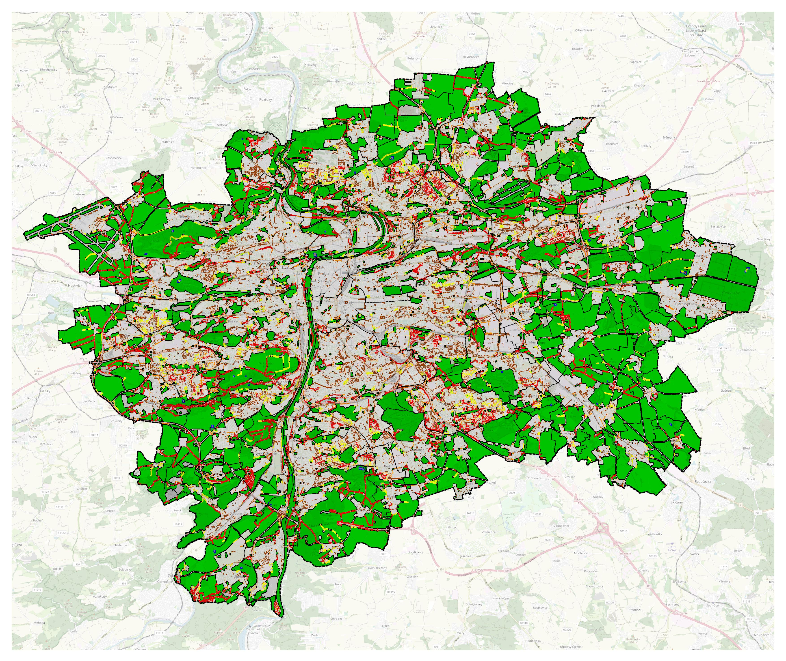
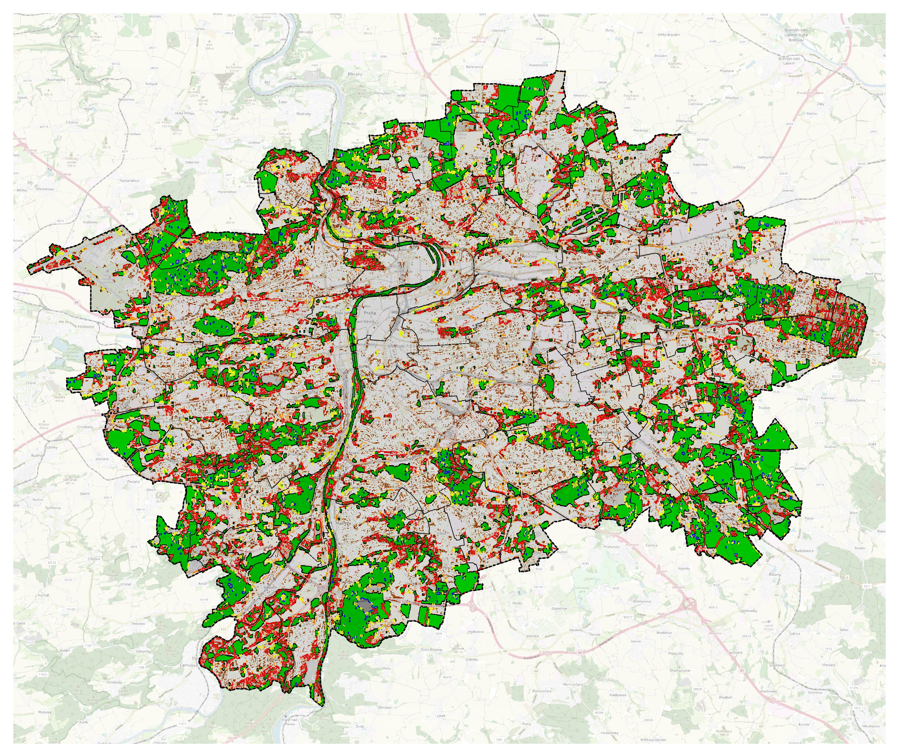
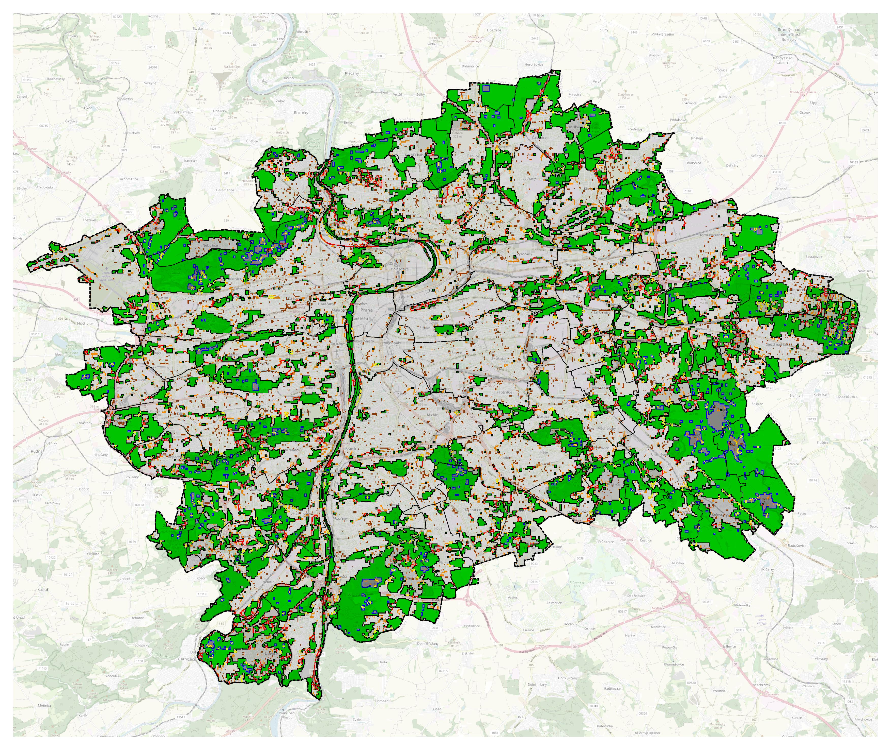
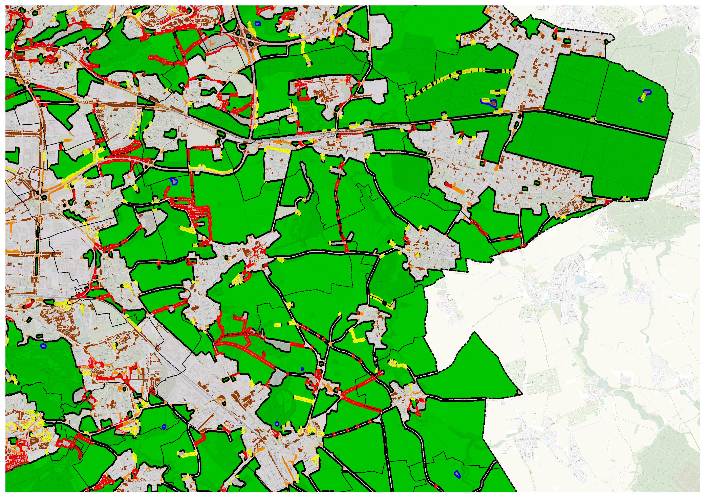
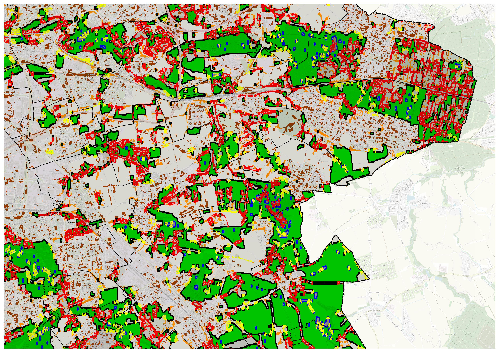
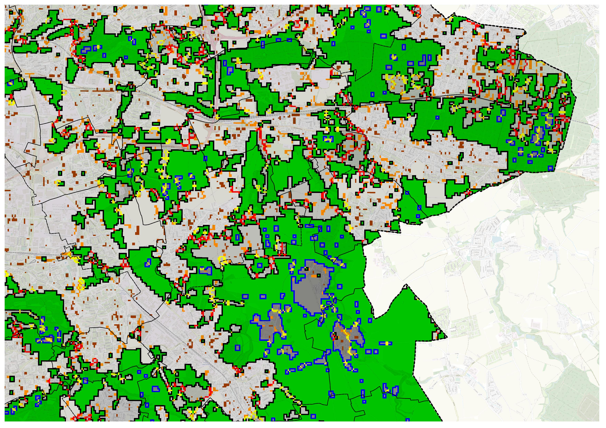
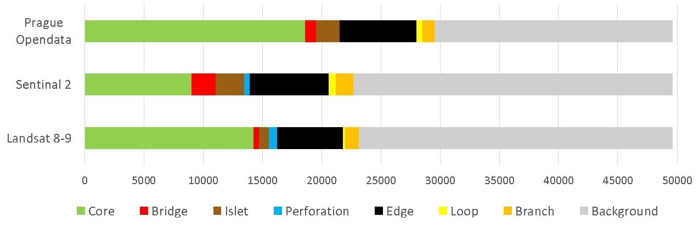
On analysing the three sources, the difference between vector and raster sources are quite evident. The total GBI area from LULC vector was found to be the largest, 29500 Ha. This is because unlike raster data, LUCL vectors capture all open and green areas irrespective of vegetation presence and quality, including barren sites.
Whereas, rasters compiled from the NDVI of satellite images only captured areas with vegetation and open spaces or farmlands with greenness that have the potential ecosystems and biodiversity. In terms of MSPA components, due to the consolidated structure of GBI in LULC vector data, the proportion of cores is much higher than those in raster inputs. Comparing the components of Sentinel 2 and Landsat 8-9, the total area identified with Landsat 8-9 is greater by 2% (450 Ha) than the former. Due to finer resolution of Sentinel 2, GBI network identified is more precise than Landsat 8-9 and hence, more fragmented. That is probably why the cores delineated in Sentinel 2 are fewer than the Landsat 8-9. Instead, islets that are standalone pixels without any core and bridges that connect two different cores are more in proportion in Sentinel 2. As visible from the blow-ups of the eastern GBI network of Prague, MSPA of Sentinel 2 has highlighted the bridges between cores with more granularity in comparison to LULC vector and Landsat 8-9.
Learnings
So what source works best for assessment of GBI network? It depends! It depends on what data you have, the quality of your data and the scale and scope of your project. If the project area has high resolution and well-categorised vector data, selecting specific categories representing required quality of vegetation is the easiest source for MSPA input. Using this data source does not need the skills and time for processing raw satellite files which often have limitations of cloud cover, sensor discrepancies and infrequent image acquisition.
If high resolution LULC data is not available, such as in many data-scarce places, processing satellite imageries could be a alternative. While Sentinel-2 provides higher resolution (10 m) global imageries, often certain datasets are "offline" and not readily available. On the other hand, Landsat 8-9 is widely available with more frequent dates of image acquisition but has lower resolution (30 m). However, if the scale of the project is large such as at city or regional scale, using low resolution data source can also meet the objective while avoiding high computational demand.